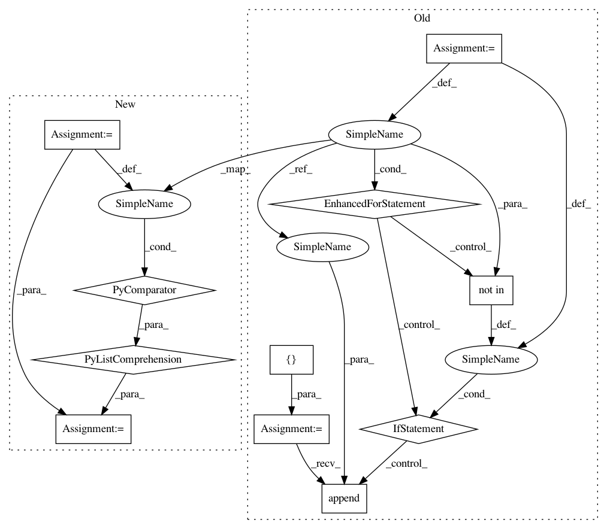

86212db71dea7810f5b81726f11db3aa398064f1,homeassistant/components/min_max/sensor.py,,calc_mean,#Any#Any#,104
Before Change
def calc_mean(sensor_values, round_digits):
Calculate mean value, honoring unknown states.
result = []
for _, sensor_value in sensor_values:
if sensor_value not in [STATE_UNKNOWN, STATE_UNAVAILABLE]:
result.append(sensor_value)
if len(result) == 0:
return None
return round(sum(result) / len(result), round_digits)
After Change
def calc_mean(sensor_values, round_digits):
Calculate mean value, honoring unknown states.
result = [
sensor_value
for _, sensor_value in sensor_values
if sensor_value not in [STATE_UNKNOWN, STATE_UNAVAILABLE]
]
if not result:
return None
return round(sum(result) / len(result), round_digits)
In pattern: SUPERPATTERN
Frequency: 3
Non-data size: 11
Instances
Project Name: home-assistant/home-assistant
Commit Name: 86212db71dea7810f5b81726f11db3aa398064f1
Time: 2021-03-27
Author: git@frenck.dev
File Name: homeassistant/components/min_max/sensor.py
Class Name:
Method Name: calc_mean
Project Name: biocore/scikit-bio
Commit Name: 81d92544f48857e679b2670107bb8139b02d01d5
Time: 2014-09-11
Author: jai.rideout@gmail.com
File Name: skbio/sequence/_sequence.py
Class Name: BiologicalSequence
Method Name: degap
Project Name: home-assistant/home-assistant
Commit Name: 86212db71dea7810f5b81726f11db3aa398064f1
Time: 2021-03-27
Author: git@frenck.dev
File Name: homeassistant/components/min_max/sensor.py
Class Name:
Method Name: calc_median